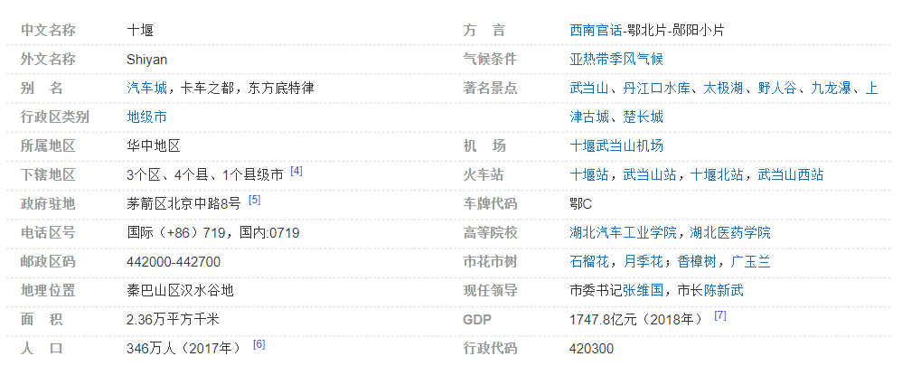

十堰
十堰，简称“堰”，别称“车城”，是中国卡车之都，湖北省地级市，是鄂、豫、陕、渝毗邻地区唯一的区域性中心城市，鄂西生态文化旅游圈的核心城市，秦巴山区三大中心城市之一。
十堰地处中国中央山地，秦巴山区汉水谷地，湖北西北部汉江中上游，北抵秦岭，南依巴山，汉江和武当山横贯全境。四季分明，气候宜人，独特的地理位置，使十堰拥有“川陕咽喉、四省通衢”之称。全境面积2.3万平方公里，总人口346万。
十堰有着悠久的历史，1995年在郧阳发现中国唯一一处白垩纪龙蛋共存的化石群，1975年发现于郧阳的轰动古人类考古学界距今100万年的“郧县人”头盖骨化石。中国现存唯一巡抚志《郧台志》揭示了十堰郧阳明清时期曾经是鄂豫川陕四省毗邻地区的中心城市。
现在的城区于清朝因人们在百二河和犟河拦河筑堰十处以便灌溉，由此得名十堰。1969年，成立县级十堰市，1973年，升格为省辖市。1994年，成立新的地级十堰市。
十堰是一座新兴的现代化城市。形成了汽车产业为主导，以生态文化旅游、能源、现代服务业、绿色有机农产品加工业为支撑，以智能装备制造、生物产业、节能环保、新材料产业为重点的“一主四大四新”现代产业体系。
武当山，丹江水，汽车城是十堰的三张世界级名片。十堰是世界文化遗产著名道教圣地武当山、南水北调中线工程调水源头丹江口水库、东风商用车有限公司总部所在地。
十堰先后荣获国家卫生城市、中国宜居城市、国家园林城市、国家森林城市等荣誉称号。
